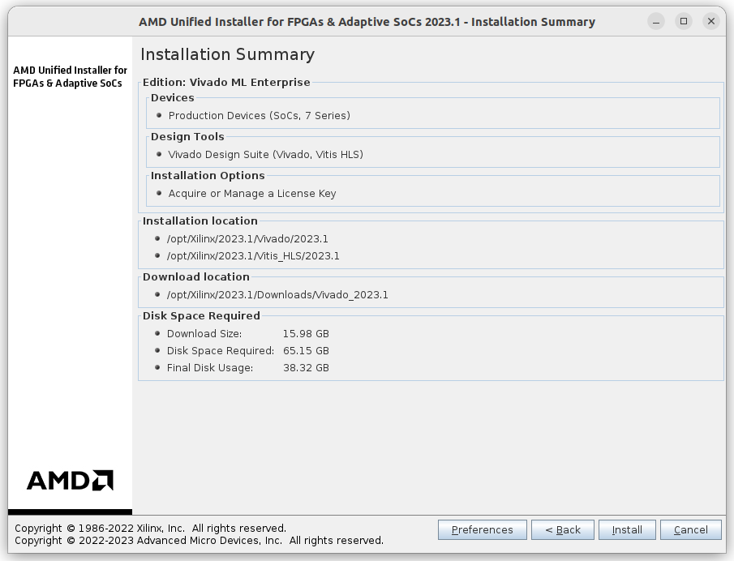
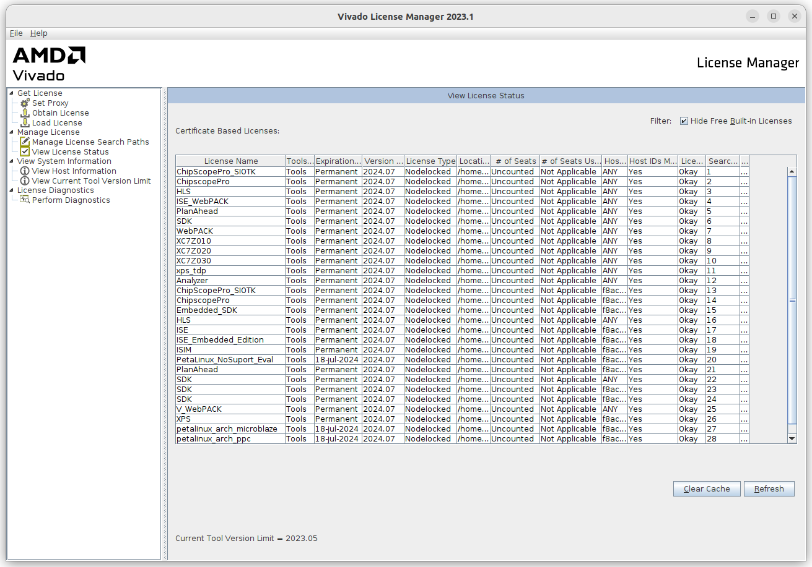

การติดตั้งซอฟต์แวร์ AMD / Xilinx Vivado Design Suite สำหรับ Ubuntu#
Keywords: Xilinx Vivado Design Suite, Xilinx FPGAs / SoCs
▷ ซอฟต์แวร์สำหรับการออกแบบวงจรดิจิทัลและใช้งานชิป Xilinx FPGAs#
AMD / Xilinx เป็นหนึ่งในรายชื่อผู้ผลิตชิปประเภท FPGAs (Field-Programmable Gate Arrays) และทางบริษัทก็ได้พัฒนาซอฟต์แวร์เพื่อใช้งานกับชิปดังกล่าวของบริษัทด้วย มีทั้งเวอร์ชันของซอฟต์แวร์ที่ใช้งานได้ฟรี และเวอร์ชันที่ผู้ใช้จะต้องเสียค่าลิขสิทธิ์ในการใช้งาน
ตัวอย่างซอฟต์แวร์ของ AMD / Xilinx ได้แก่
- Vivado Design Suite (Initial Release: April 2012)
เป็นซอฟต์แวร์สำหรับการออกแบบวงจรดิจิทัล ผู้ใช้สามารถออกแบบวงจรดิจิทัลโดยใช้ภาษา HDL (VHDL / Verilog / SystemVerilog)
และใช้งานกับชิป FPGAs / SoCs / Adaptive SoCs
- 7-Series FPGAs: Artix, Kintex, Virtex-7, Spartan-7
- Zynq SoCs: Zynq-7000 / Zynq-UltraScale MPSoC/RFSoC
- Versal ACAP (Adaptive SoCs): Versal Prime / Premium / AI Core Series
- Vivado ML Edition เป็นเวอร์ชันที่อัปเกรดจาก Vivado Design Suite เพื่อรองรับการใช้งานชิป Versal ACAP Adaptive SoCs ซอฟต์แวร์แบ่งเป็นสองเวอร์ชันให้เลือกใช้งานคือ Standard Edition (free) และ Enterprise Edition
- Vitis HLS Tool เป็นเวอร์ชันที่อัปเกรดจาก Vivado HLS Tool ซึ่งเป็นคอมไพเลอร์สำหรับการสังเคราะห์วงจรในระดับสูง หรือ High Level Synthesis (HLS) และแปลงโค้ด C/C++ ให้เป็นโค้ดในภาษา HDL ในระดับ RTL (Register-Transfer Level) ได้โดยอัตโนมัติ
- AMD Vitis Unified Software Platform
เป็นซอฟต์แวร์รวมที่ประกอบด้วยซอฟต์แวร์ เช่น
- Vitis Core Development Kit เป็นซอฟต์แวร์สำหรับการพัฒนา แอปพลิเคชันฝังตัว (Embedded Software Development) และเขียนโค้ดด้วยภาษา C/C++ หรือ OpenCL สำหรับตัวประมวลผลหรือซีพียูภายในชิป FPGAs / SoCs / Adaptive SoCs
- Vivado Design Suite / Vivado ML Edition สำหรับการออกแบบวงจรดิจิทัล

รูป: การจำแนกประเภทย่อยของชิป FPGAs / SoCs ที่ได้มีการผลิตโดย AMD / Xilinx
รูป: ซอฟต์แวร์และฮาร์ดแวร์ที่เกี่ยวข้องกับการพัฒนาแอปพลิเคชัน AI / ML (Source: AMD / Xilinx)
รูป: Vivado Design Suite - System-Level Design Flow (Source: AMD / Xilinx)
บทความนี้นำเสนอ การใช้งานซอฟต์แวร์ที่มีชื่อว่า Vivado ML Edition เพื่อการออกแบบวงจรดิจิทัล และนำไปใช้กับบอร์ด FPGA เช่น Artix-7 หรือ Spartan-7 ซอฟต์แวร์นี้สามารถดาวน์โหลดมาใช้ได้ฟรี มีให้เลือกใช้สำหรับระบบปฏิบัติการ Windows หรือ Linux
แนะนำให้ผู้ใช้ดาวน์โหลดไฟล์ Web Installer (AMD Unified Installer for FPGAs & Adaptive SoCs) จากเว็บไซต์ของบริษัท AMD / Xilinx ผู้ใช้จะต้องมีบัญชี (User Account) หรือ ลงทะเบียนผู้ใช้ก่อนจึงจะดาวน์โหลดไฟล์ได้
ในบทความนี้ได้เลือกใช้ Vivado ML Edition 2023.1 และนำมาใช้กับระบบปฏิบัติการ Linux / Ubuntu 22.04 LTS (64-bit)
▷ การติดตั้งซอฟต์แวร์ AMD / Xilinx Vivado Design Suite#
ไฟล์ที่ใช้ในการติดตั้งคือ Xilinx_Unified_2023.1_0507_1903_Lin64.bin
(Linux Self Extracting Web Installer, Size: 265.94 MB)
และใช้สำหรับการติดตั้งโปรแกรมแบบ Web Installation
ทำคำสั่งเพื่อสร้างไดเรกทอรี เช่น /opt/Xilinx สำหรับการติดตั้งซอฟต์แวร์
$ sudo mkdir /opt/Xilinx
$ sudo chown -R $USER:$USER /opt/Xilinx
จากนั้นให้ทำคำสั่งเพื่อเริ่มต้นขั้นตอนการติดตั้งโปรแกรม
$ chmod +x ./Xilinx_Unified_2023.1_0507_1903_Lin64.bin
$ ./Xilinx_Unified_2023.1_0507_1903_Lin64.bin
เลือกใช้ซอฟต์แวร์ Vivado Design Suite สำหรับการออกแบบวงจรดิจิทัล ด้วยภาษา VHDL / Verilog / SystemVerilog และเลือกตระกูลของชิป FPGA ของบริษัท AMD / Xilinx ที่คาดว่าจะใช้งาน

รูป: หน้าต่างเริ่มต้นสำหรับการติดตั้งโปรแกรม
รูป: กรอกชื่อผู้ใช้โดยระบุเป็นอีเมล์ และรหัสผ่านตามที่ได้เคยลงทะเบียนผู้ใช้งานไว้กับ AMD / Xilinx
รูป: เลือกซอฟต์แวร์ที่จะติดตั้งเป็น Vivado

รูป: เลือก Design Tools และ Devices ที่ต้องการจะใช้งาน

รูป: ยอมรับเงื่อนไขในการใช้งานซอฟต์แวร์
รูป: เลือก Installation Directory
(ในตัวอย่างได้เลือกเป็น /opt/Xilinx/2023.1)

รูป: หน้าต่างแสดงสรุปรายละเอียดสำหรับการติดตั้ง (ให้สังเกตขนาดของไฟล์ที่ต้องดาวน์โหลดมา และความจุในฮาร์ดดิสก์ที่ต้องการใช้) แล้วกดปุ่ม Install
รูป: ในระหว่างการติดตั้งซอฟต์แวร์ จะต้องมีการดาวน์โหลดไฟล์ต่าง ๆ จากอินเทอร์เน็ต
เมื่อได้ติดตั้งโปรแกรมได้สำเร็จแล้ว ให้ทำขั้นตอน License Setup โดยการเรียกใช้งานโปรแกรม AMD License Manager
ขั้นตอนถัดไปคือ ผู้ใช้จะต้องไปยัง Xilinx Product Licensing Site เพื่อขอสร้างไฟล์ลิขสิทธิ์ (License File) ซึ่งเป็นแบบ Node-locked สำหรับการใช้งานซอฟต์แวร์ได้ฟรี
ผู้ใช้จะต้องกรอกข้อมูลเกี่ยวกับเครื่องคอมพิวเตอร์ที่จะใช้งาน โดยจะต้องระบุหมายเลข NIC
หรือ MAC Address ของเครื่องคอมพิวเตอร์ที่จะใช้งาน
เมื่อกรอกข้อมูลและส่งข้อมูลเข้าระบบแล้ว ผู้ใช้จะได้รับไฟล์ xilinx.lic ผ่านทางอีเมล์ตามที่ได้ลงทะเบียนเอาไว้
แล้วให้นำไปใส่ไว้ในไดเรกทอรี $HOME/.Xilinx/
รูป: เมื่อกดปุ่ม Connect จะเปิดเว็บเบราว์เซอร์ไปยังเว็บไซต์ของ AMD เพื่อขอไฟล์ลิขสิทธิ์ (License File) สำหรับเครื่องผู้ใช้

รูป: การตรวจสอบไฟล์ลิขสิทธิ์ เมื่อได้รับมาผ่านทางอีเมล์และติดตั้งในเครื่องของผู้ใช้แล้ว

รูป: หน้าต่างหลักของ Vivado ML Edition และพร้อมใช้งานแล้ว
อีกขั้นตอนหนึ่งที่สำคัญคือ การติดตั้งไฟล์สำหรับใช้งาน Xilinx Platform Cable USB Programmer สำหรับ Linux โดยให้ทำคำสั่งดังนี้ (ข้อสังเกต: ไดเรกทอรีสำหรับการติดตั้ง Vivado ของผู้ใช้อื่น อาจแตกต่างไปจากตัวอย่าง)
# Change to the installation directory of the Vivado ML edition
$ cd /opt/Xilinx/2023.1/Vivado/2023.1/
# Change to the installation directory for Xilinx Cable drivers
$ cd ./data/xicom/cable_drivers/lin64/install_script/install_drivers
# Run the installation script
$ sudo ./install_driver
เมื่อทำคำสั่งข้างต้นแล้ว พบว่ามีการเพิ่มไฟล์สำหรับ Linux udev rules
/etc/udev/rules.d/52-xilinx-pcusb.rules
และมีตัวอย่างข้อความภายในไฟล์ดังนี้
ATTR{idVendor}=="03fd", ATTR{idProduct}=="0008", MODE="666"
ATTR{idVendor}=="03fd", ATTR{idProduct}=="0007", MODE="666"
ATTR{idVendor}=="03fd", ATTR{idProduct}=="0009", MODE="666"
ATTR{idVendor}=="03fd", ATTR{idProduct}=="000d", MODE="666"
ATTR{idVendor}=="03fd", ATTR{idProduct}=="000f", MODE="666"
ATTR{idVendor}=="03fd", ATTR{idProduct}=="0013", MODE="666"
ATTR{idVendor}=="03fd", ATTR{idProduct}=="0015", MODE="666"
▷ กล่าวสรุป#
บทความนี้ได้นำเสนอขั้นตอนการติดตั้งซอฟต์แวร์ AMD Vivado ML Edition (v2023.1) สำหรับ Ubuntu 22.04 LTS เพื่อนำมาใช้ในการออกแบบวงจรดิจิทัลสำหรับชิป FPGA เช่น AMD / Xilinx Artix-7 หรือ Spartan-7 เป็นต้น
This work is licensed under a Creative Commons Attribution-ShareAlike 4.0 International License.
Created: 2023-07-20 | Last Updated: 2023-07-20